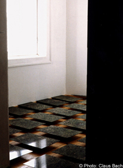
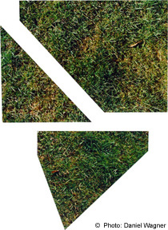

|


"Evergreen", 1998. This work is part of the project „Weimar - Jerusalem – Jerusalem - Weimar“. Both cities are mythical and transfigured – both embody historical, political, and ethnic new awakening, both stand for broken promises and dissapointed hope, both create a point of reference for yearnings and projections. Between those two cities, two histories, me – a topographical, social cultural, traveler. Between the myths and the real stories, thier images. No synthesis, but movements, confrontation, synergy, difference, comparisons, Import & Export: stories, mentalities, longings, flora, fauna, weather. Custom, love, hate. Past, memory, nostalgia. Tradition, language, place of residence, homeland. Evergreen is a modular installation of Aluminium plates on wooden blocks, set in fixed distance from each other and is brought on to the floor. The surface seems to float, the construction is invisible. The exhibition space gives the work it’s form. Close Window All content copyright 2006 Naomi Tereza Salmon - all rights reserved |